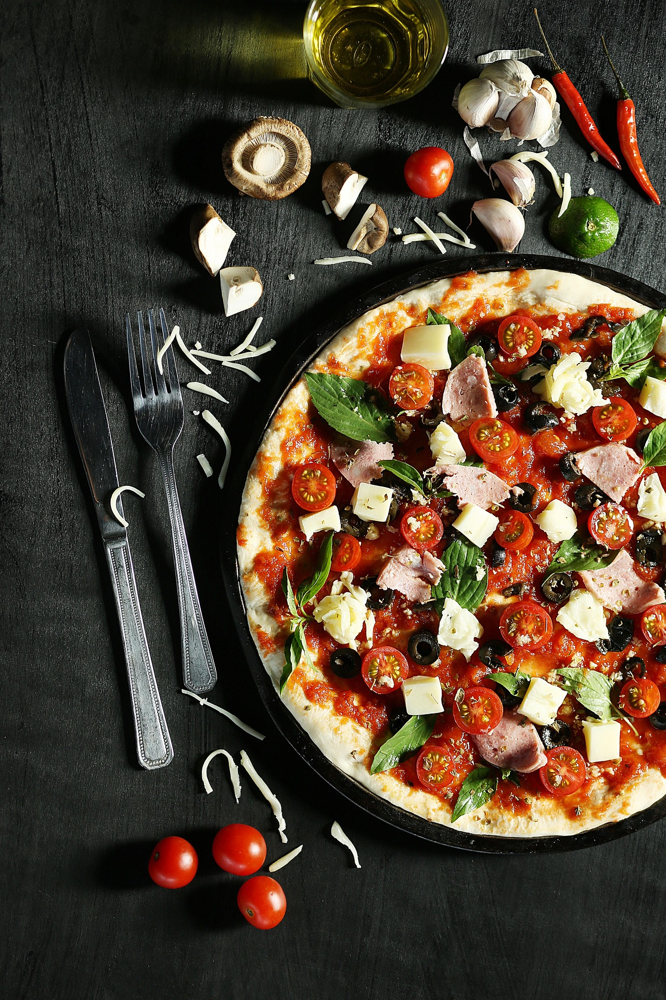
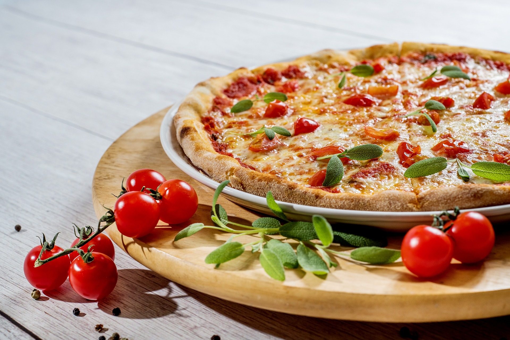
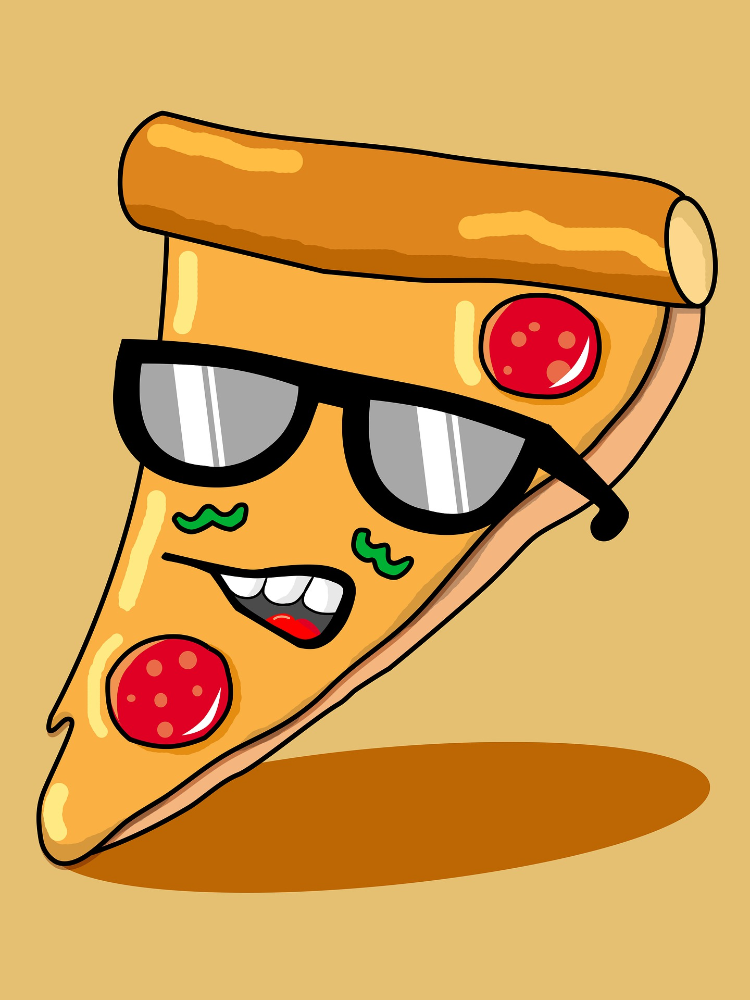

Javascript
Egy egyszerű CRUD alkalmazás a kategoria tábla felhasználásával. A javascript egy lokális tömbben tárolja az adatokat, így minden újratöltéskor a módosítások eltűnnek.
React
Egy egyszerű CRUD alkalmazás a pizza tábla felhasználásával. A react még szintén lokális tömbökkel dolgozik, a módosítások nem mentődnek el.
Single Page Application (SPA)
A SPA-ban két alkalmazást valósítottunk meg, react-tel. Az egyik egy pizza összeállító, amiben egy pizzát lehet összeállítani, több különböző feltéttel. A második alkalmazás az elsőben előállított pizza árát értékeli ki, a hozzávalók árát figyelembe véve.
Fetch API
A fetch api alkalmazásban a kliens a szerverrel kommunikál, a szerver pedig közvetlen az adatbázissal, így minden változtatás elmentődik a szerveren, azok újratöltéskor nem veszik el. Ezen felül itt szintén megvalósul a CRUD minden pontja.
Axios
Az Axios szintén a szerverrel kommunikál, és a változások szintén elmentődnek az adatbázison, de ezt már react-al oldja meg.
Objektumorientált JavaScript alkalmazás (OOJS)
Egy egyszerű OOP alkalmazás. Két képet lehet módosítanni gombokkal, egyszerre csak egy kép lehet kijelölve.

